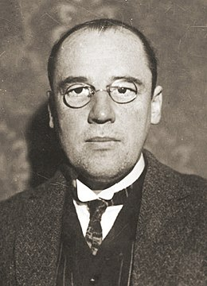

Wacław Franciszek Sierpiński (ur. 14 marca 1882 w Warszawie, zm. 21 października 1969 tamże) – polski matematyk, jeden z czołowych przedstawicieli warszawskiej szkoły matematycznej i twórców polskiej szkoły matematycznej, wieloletni profesor Uniwersytetu Warszawskiego i przewodniczący rady naukowej Instytutu Matematycznego Polskiej Akademii Nauk (IM PAN). Członek kilkunastu akademii nauk, w tym członek rzeczywisty Polskiej (PAN) i jej wiceprezes (1952–1957), prezes Towarzystwa Naukowego Warszawskiego (1931–1952) i Polskiego Towarzystwa Matematycznego (1928–1930) oraz jego członek honorowy. Wyróżniony szeregiem odznaczeń polskich i zagranicznych, doktoratów honorowych i innych nagród; kawaler Krzyża Wielkiego Orderu Odrodzenia Polski oraz Legii Honorowej III klasy. Dydaktyk matematyki i jej popularyzator.

Sierpiński zajmował się teorią liczb, analizą matematyczną i podstawami matematyki – teorią mnogości, topologią mnogościową oraz teorią kategorii. W teorii liczb badał zwłaszcza liczby całkowite, w analizie – funkcje rzeczywiste i teorię miary, a w teorii mnogości – teorię opisową i ogólną. Szczególne znaczenie mają jego prace w tej ostatniej dziedzinie, co sam przyznawał, określając się jako badacz nieskończoności. Analizował pewnik wyboru i hipotezę continuum, m.in. ich konsekwencje i warunki równoważne. Zostawił po sobie obszerny dorobek: 57 książek, 724 prace i komunikaty, 107 artykułów i przemówień oraz 12 skryptów. Wypromował też co najmniej kilku doktorów, współtworzył czasopismo „Fundamenta Mathematicae” i redagował „Acta Arithmetica”, wznawiając je po II wojnie światowej. Działał też społeczno-politycznie, uczestnicząc w strajkach z 1905 roku, wojnie polsko-bolszewickiej, krytykując reformy Janusza Jędrzejewicza i cenzurę w socjalistycznej Polsce, choć z tej krytyki PRL publicznie się wycofał.
problem1
problem2
problem3
problem4
problem5
problem6
problem7
problem8
problem9
problem10
problem11
problem12
problem13
problem14
problem15
problem16
problem17
problem18
problem19
problem20
problem21
problem22
problem23
problem24
problem25
problem26
problem27
problem28
problem29
problem30